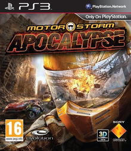

MotorStorm Apocalypse

MotorStorm: Apocalypse , Evolution Studios tarafından hazırlanan ve Sony Computer Entertainment tarafından PlayStation 3 için yayınlananbir 2011 yarış video oyunudur . MotorStorm serisinin dördüncüve PlayStation 3'ün üçüncü oyunudur. Başlık, Electronic Entertainment Expo 2010'un başlangıcından kısa bir süre önce 6 Haziran'da Evolution Studios tarafındanPlayStation Blog'da açıklandı.